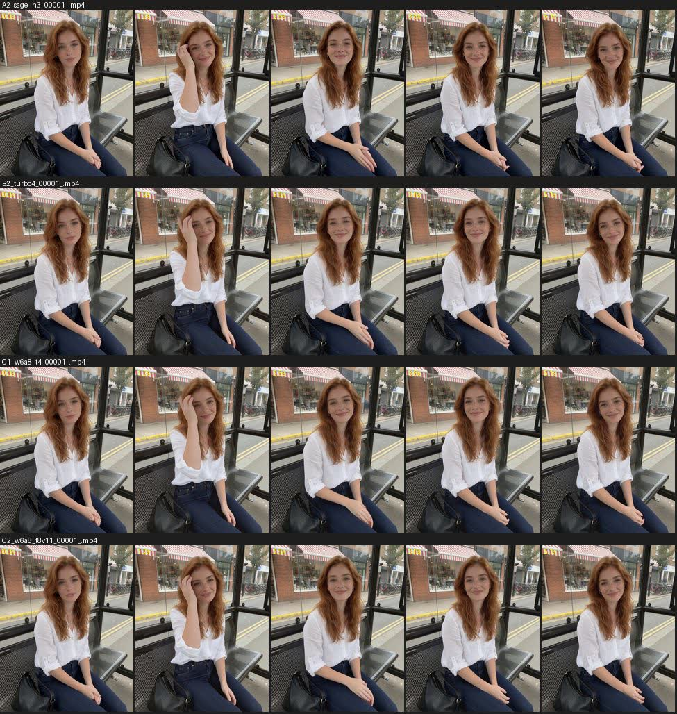
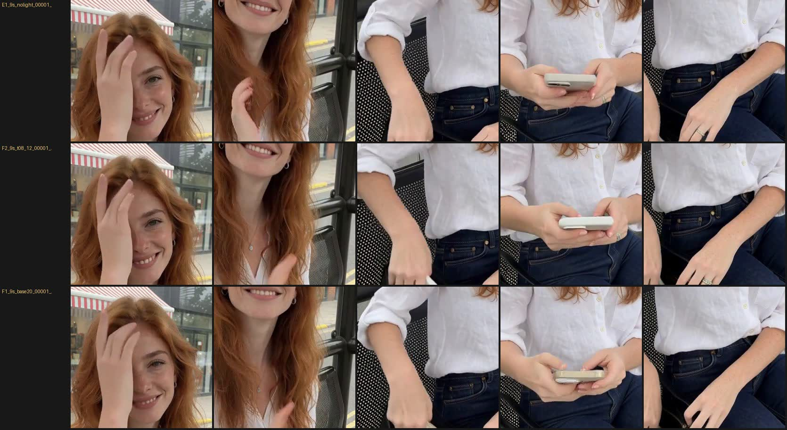
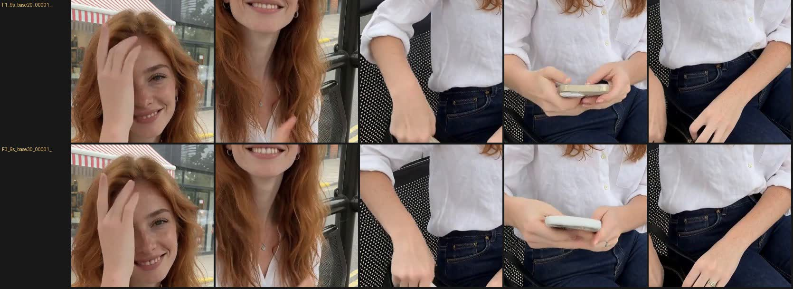
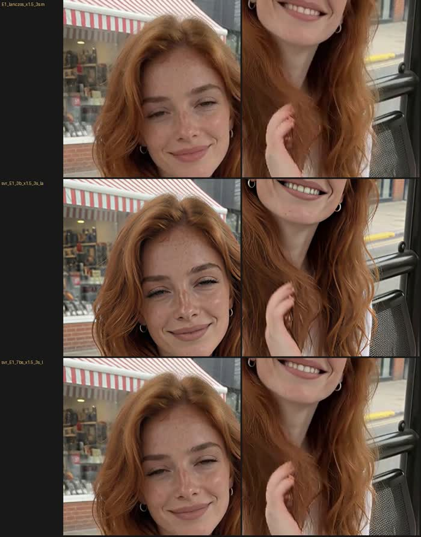

Что ускоряет H3 без потерь, что ломает качество и какой рецепт даёт лучшие руки и фактуру на трудной сцене.
Поправка 24.10.2026: рецепт C1 не годится. На 5-секундной спокойной сцене он выглядел резче, но на 9 с с быстрыми движениями руки плавятся, разрешение местами падает, цвет плывёт, предметы морфятся. Наши метрики (резкость по 5 кадрам, дрейф лица) этого не видели. Турбо 4 шага, LoRA v1.1 и веса w6a8 отклонены. Рабочий рецепт остаётся прежним (глава «Видео»); проверяется только SageAttention — та же математика, другое ядро.
Один и тот же кадр, один seed, 5 секунд видео 768×960. Слева исходный 03, справа новый рецепт C1: SageAttention + веса w6a8 + турбо-LoRA на 4 шага. Движения те же, лицо держится стабильнее, середина ролика резче.
Время — от постановки в очередь до готового mp4, модели уже в памяти. Резкость — дисперсия лапласиана по кадрам (больше = резче) в начале, середине и конце ролика. Дрейф лица — насколько лицо в последнем кадре отличается от первого (меньше = стабильнее).
| Вариант | Что меняли | Время | Резкость | Дрейф |
|---|---|---|---|---|
| A0 | исходный 03: int8, турбо 8 шагов v1.0, shift 8 | 163 с | 984 / 919 / 927 | 26 |
| A1 / A2 | + SageAttention (KJNodes или встроенная нода H3, результат одинаковый) | 96 с | 996 / 924 / 922 | 25 |
| A3 | + Sage, shift 6 | 103 с | 1069 / 992 / 994 | 26 |
| A4 | + Sage, shift 10 | 99 с | 952 / 877 / 882 | 25 |
| A5 | + Sage, 10 шагов | 117 с | 1017 / 930 / 944 | 26 |
| B2 | + Sage, турбо 4 шага v1.3 | 65 с | 986 / 972 / 997 | 12 |
| B3 | + Sage, турбо 8 шагов v1.1 | 100 с | 1035 / 993 / 1026 | 11 |
| C2 | + Sage, w6a8, турбо 8 шагов v1.1 | 99 с | 1050 / 1018 / 1044 | 13 |
| C1 | + Sage, w6a8, турбо 4 шага v1.3 | 64 с | 1049 / 1050 / 1067 | 12 |

Видеокарта (16 ГБ) у H3 заполнена всегда, но упираемся мы в оперативную память. Модели, которые не помещаются в видеопамять, ComfyUI держит в RAM и подкачивает по частям. Если RAM кончается, Windows начинает писать на диск, и ролик считается вдвое дольше или падает.
| Что | RAM | Комментарий |
|---|---|---|
| H3 на 5 с сверх фона | ≈ 27 ГБ | текстовый энкодер 32B (nvfp4, 16 ГБ) + видео-модель + VAE |
| Windows + Claude + мелочи | ≈ 16 ГБ | фон без браузера |
| Chrome с десятками вкладок | 13–21 ГБ | включи «Экономию памяти» в настройках производительности |
| WSL2 + Docker Desktop | до ~30 ГБ | виртуальная машина; в диспетчере задач видна как маленький vmmem, а держит много |
| ComfyUI Desktop + второй сервер | ×2 | два ComfyUI с H3 одновременно не помещаются |
Перед длинным рендером: закрой Docker Desktop, выполни wsl --shutdown, закрой лишний браузер и второй ComfyUI. Проверка: диспетчер задач → Производительность → Память → «Доступно» должно быть ≥ 35 ГБ.
Attention («внимание») — часть модели, которая держит ролик цельным. H3 режет видео на маленькие кусочки — токены (кусок кадра на несколько соседних кадров). На каждом шаге каждый токен сравнивается со всеми остальными: какие на него похожи, откуда брать информацию. Так лицо в сотом кадре остаётся тем же, что в первом, а предметы не теряются. Сравнение «каждый с каждым» растёт квадратично: ролик вдвое длиннее — внимание вчетверо дороже. Для видео это самая тяжёлая часть расчёта.
SageAttention считает ту же операцию с меньшей точностью чисел. Оценки сходства (Q·K) — в 8-битных целых вместо 16-битных дробных, взвешенную сумму (P·V) — в пониженной точности FP8/FP16. Перед округлением из данных вычитается среднее, чтобы редкие большие значения не съели точность остальных. Тензорные ядра RTX 50-й серии считают 8-битные числа в разы быстрее. Веса, LoRA и промпт не меняются, это не другая модель.
| Замер | Точный расчёт | SageAttention |
|---|---|---|
| Одна операция внимания (микротест) | 5,5 мс | 1,1 мс · ×4,8 |
| Совпадение результата | 100 % | 99,93 % |
| Ролик 5 с, 768×960, спокойная сцена | 163 с | 96 с · −41 % |
Риск: 99,93 % — не 100 %. Разница копится за шаги и сотни кадров; на трудной сцене (быстрые руки, мелкие предметы) детали могут поплыть сильнее. На спокойной сцене разницы не видно; трудную сцену проверяем сравнением «бок о бок». Выключается просто: убрать ноду из workflow.
SageAttention ставится в Python-окружение ComfyUI двумя пакетами. Нужны версии под свой torch и CUDA: у нас torch 2.12 + CUDA 13.0, Python 3.13.
python -m pip install --no-deps "triton-windows>=3.8,<3.9" python -m pip install --no-deps https://github.com/woct0rdho/SageAttention/releases/download/v2.2.0-windows.post6/sageattention-2.2.0+cu130torch2.10.0andhigher.post6-cp310-abi3-win_amd64.whl
В workflow после загрузки модели (до узла shift) вставь ноду MiniMaxH3MemoryEfficientSageAttentionPatch — она встроена в ComfyUI. Модели и LoRA не меняй: турбо 8 шагов v1.0 на int8 остаются эталоном.
ComfyUI шлёт прогресс и превью кадров только той вкладке, от имени которой поставлено задание. Чтобы видеть рендеры агента: открой http://127.0.0.1:8189, нажми F12 и выполни app.api.clientId, пришли строку агенту. Каждый вариант эксперимента лежит как обычный workflow в claude/lab/S1/, а в каждом готовом ролике записан граф, который его сделал.
Трудная сцена 9 с, по советам официального гайда Comfy по H3. Сравниваем крупные вырезки одних и тех же мест в одни и те же моменты: так разница видна сразу, в отличие от просмотра роликов по очереди.


| Рецепт | 9 с считается | Итог |
|---|---|---|
| турбо 1.0 · 8 шагов · euler · shift 8 | 231 с | пальцы слипаются на движении |
| турбо 0,8 · 12 шагов · res_multistep · shift 12 | 341 с | быстрый вариант |
| без турбо · 20 шагов · res_multistep · shift 12 | 477 с | хорошо |
| без турбо · 30 шагов · res_multistep · shift 12 | 747 с | лучше всех — по умолчанию в 03 и 03c |

Та же героиня, но кадр снят «с вытянутой руки»: сначала фото на Krea 2 в кадрировке фронтальной камеры (выбор зрителей — seed 7), потом 9 с H3 по рецепту качества. Камера двигается вместе с рукой, поворачивается к улице, героиня поправляет волосы и машет. Минус: лицо в первую секунду и в середине ролика — два разных лица; удержание лица разбираем в серии 3.